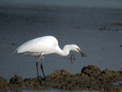

몸길이 58∼66cm이다. 크기 외에는 다른 백로와 구별하기 어렵고 야외에서는 구별이 더욱 어렵다. 깃털은 완전히 흰색이며 번식기에는 긴 깃털이 꽁지보다 길다. 부리는 여름철 번식기에는 검정색이고 겨울에는 노란색에 끝만 검다. 중대백로나 왜가리 등과 섞여 번식하나 한국에서는 비교적 작은 무리를 짓고 사는 여름새이다. 4월 하순에서 8월 상순까지 3~5개의 알을 낳는다. 부화한 지 얼마 안 된 새끼는 온몸에 흰 솜털이 빽빽이 나 있다. 주로 물고기를 잡아먹는데, 갑각류(새우·가재)·개구리·곤충 따위도 잡아먹는다. 1968년 번식기에 벌인 전국 조사에서는 충청북도 진천군 이월면 노원리, 부용면 노호리 및 강원도 영월군 쌍용리 등 중부지방에서 집중적으로 번식하는 것으로 밝혀졌으나 무리가 작았고 노원리와 노호리의 번식지는 다른 곳으로 옮겨졌다.
